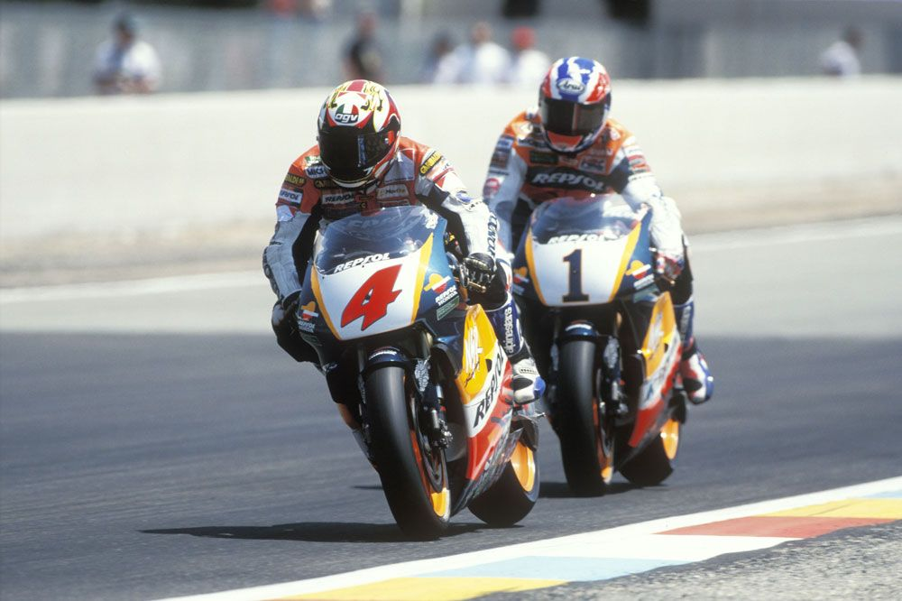
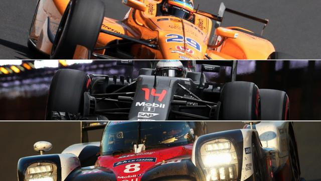
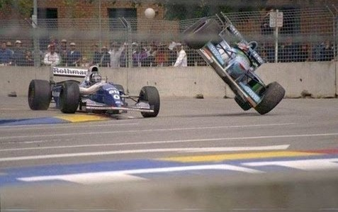
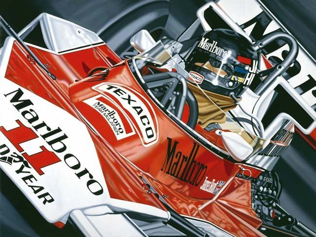

Una de las anécdotas más surrealistas del Circuito de Jerez ocurrió en 1996, durante el Gran Premio de España de 500cc. Ese año, Álex Crivillé lideraba la carrera frente a su compatriota Alberto Puig y al australiano Mick Doohan.

El Gran Premio más largo
El Gran Premio de Canadá de Fórmula 1, celebrado en el circuito Gilles Villeneuve en Montreal, es conocido por una curiosidad histórica que lo hace especialmente memorable: el final del Gran Premio de Canadá de 2011 es considerado uno de los más emocionantes y dramáticos en la historia de la Fórmula 1.
La Triple Corona
La Triple Corona en el mundo del automovilismo es un logro no reconocido ofialmente y que hasta la fecha solo ha logrado un piloto hasta el fecha.

El primer mundial del Kaiser
Nos remontamos a 1994 cuando el GP de Australia era el último de la temporada y se corria en Adelaide, en lugar del actual Albert Park de Melbourne.

Carrera de película
Un final de carrera con lluvia y niebla sobre el asfalto de Fuji. El final de la temporada de 1976 en el Gran Premio de Japon.

Ayrton Senna
La historia del brasileño Ayrton Senna en su paso por la Formula 1.